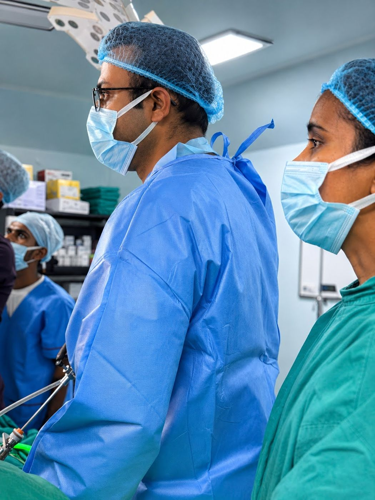

Hiatus and paraoesophageal hernia repair
The stomach is brought back into its usual position and the opening in the diaphragm is repaired. A paraoesophageal hernia is a particular type in which part of the stomach lies alongside the food pipe.
Understand your options · Plan your visit
Discuss GERD, hiatus hernia and laparoscopic fundoplication with Dr. Vikeerna Bharti in Ranchi. Understand assessment, treatment choices and recovery.
सीने में जलन, खट्टी डकार या खाना ऊपर आना एसिडिटी (GERD) या हायटस हर्निया के लक्षण हो सकते हैं। लंबे समय से दवा के बाद भी परेशानी हो तो जांच और इलाज के विकल्पों पर चर्चा करें।
Understanding the condition
Acid reflux (GERD, एसिडिटी) happens when stomach acid flows back into the food pipe. A hiatus hernia is when part of the stomach moves up through the diaphragm into the chest, which can make reflux worse. Most people are treated with medicines and lifestyle changes.
Difficulty swallowing, weight loss, vomiting blood, black stools or chest pain need prompt medical assessment. Do not assume chest pain is acidity.
When surgery is advised
Most people with acid reflux improve with medicines and changes in eating habits. Surgery is considered after endoscopy and other tests for selected patients:
The operation
In laparoscopic Nissen fundoplication, the upper part of the stomach is wrapped around the lower end of the food pipe to strengthen the valve between them. A hiatus hernia, if present, is repaired in the same operation. It is done through four or five small cuts, with a hospital stay of usually two to three days.
Many patients are able to reduce or stop acid tablets after recovery, but results vary and some people still need medicines.
The first consultation
Gastro-oesophageal reflux disease (GERD) causes troublesome reflux of stomach contents into the food pipe. A hiatus hernia means part of the stomach moves through the diaphragm. Most patients do not need surgery.
Bring available reports and scans, previous prescriptions, and any operation or discharge records. There is no need to upload medical reports to request a visit.
Bring a list of medicines and allergies, and the questions you would like answered.
Medical names, explained simply
The stomach is brought back into its usual position and the opening in the diaphragm is repaired. A paraoesophageal hernia is a particular type in which part of the stomach lies alongside the food pipe.
The upper stomach is wrapped around the lower food pipe to reduce reflux. A Nissen fundoplication is a complete wrap; the appropriate operation depends on your assessment.
Achalasia is a different condition in which the lower food-pipe muscle does not relax normally. Heller cardiomyotomy divides that muscle to help swallowing. It is not routine treatment for acidity.
The procedure is chosen after assessment. A technique listed here is not suitable for every patient.
An individual treatment plan
Treatment usually starts with appropriate medicines and practical changes to eating and daily habits.
Endoscopy, reflux testing or tests of food-pipe movement may be advised to establish the cause and guide the operation.
Persistent symptoms or selected hernias may lead to a discussion about repair and fundoplication. The choice depends on the findings.
These are general options, not a recommendation for an individual patient. Your examination and reports guide the advice.
Already advised surgery?
Bring your reports and the recommendation you received. Understand your diagnosis, the options that may suit you and the questions to ask before deciding.
Planning ahead
After fundoplication, a staged diet and careful chewing are important. Discuss lifting, return to work and follow-up with your treating team.
Informed decisions
Discuss difficulty swallowing, bloating, difficulty belching or vomiting, recurrent reflux or hernia, bleeding and injury to nearby organs. Surgery does not guarantee permanent freedom from medicines.
Already advised a procedure? Plan a second opinion →Ask for a clear estimate
An estimate depends on the diagnosis, proposed operation and hospital care required. Bring existing reports so that the options and likely costs can be discussed.
Ask what is included and excluded, and how unplanned treatment would be charged.
Insurance and Ayushman Bharat: at Samford Super Speciality Hospital, where Dr. Bharti operates, cashless treatment is available under major health-insurance and TPA plans, Ayushman Bharat and the Jharkhand Rajya Karmi Swasthya Bima Yojana (state employees’ health insurance). Eligibility depends on your policy or card and is confirmed by the hospital insurance desk.
Your surgeon

Your questions
Write down anything you are unsure about and bring it to your consultation.
The cost depends on the hospital room category, anaesthesia and theatre charges, investigations, the complexity of your case and any insurance or scheme approval. A clear estimate is given after examination and review of your reports. Cashless treatment is available at Samford under major health-insurance and TPA plans, Ayushman Bharat and the Jharkhand Rajya Karmi Swasthya Bima Yojana; the hospital insurance desk confirms eligibility.
Surgery is considered when symptoms are not controlled by medicines, when a hiatus hernia is causing reflux, or when a suitable patient prefers an operation to lifelong tablets after discussion. Endoscopy and other tests come first.
A keyhole operation in which the upper stomach is wrapped around the lower food pipe to strengthen the valve and reduce reflux. It is done through four or five small cuts with a hospital stay of usually two to three days.
Fundoplication gives long-term control of reflux for many carefully selected patients, and many reduce or stop daily tablets. Results vary, and some people need medicines again later.
Usually two to three days in hospital, soft food for four to six weeks, office work after two to three weeks and full activity in four to six weeks.
A hiatus hernia is when part of the stomach moves up through the diaphragm into the chest. Small ones often need only medicines. Large or troublesome hiatus hernias causing reflux, difficulty swallowing or breathing problems may need repair, usually with fundoplication.
Long-standing reflux is first assessed medically, usually with an endoscopy. When surgery is considered, it is done by a general or laparoscopic surgeon. Dr. Vikeerna Bharti performs laparoscopic fundoplication at Samford Super Speciality Hospital. Call 62060 91982.
For selected patients with confirmed reflux or a hiatus hernia whose symptoms continue despite treatment, laparoscopic fundoplication may be discussed after endoscopy and other tests.
No. A hiatus hernia is a structural problem at the diaphragm that can cause or worsen reflux. Not every hiatus hernia needs surgery.
Yes. Bring the treatment recommendation and available reports for an in-person second opinion.
Take the next step
Choose your clinic and prepare an appointment request. Review the message and press Send in WhatsApp.
You can visit during the listed OPD hours. For Garhwa, please check the visiting date before travelling.
Further reading
Content updated 10 October 2026. General patient information; an examination is needed for personalised advice.
सीने में जलन, खट्टी डकार और खाना ऊपर आना एसिडिटी (GERD) के लक्षण हैं; हायटस हर्निया में पेट का कुछ हिस्सा डायाफ्राम से ऊपर सीने में चला जाता है। अधिकतर मरीज दवा और खान-पान में बदलाव से ठीक रहते हैं। लंबे समय तक दवा लेने के बाद भी परेशानी रहे तो एंडोस्कोपी और अन्य जांच के बाद दूरबीन विधि से फंडोप्लिकेशन ऑपरेशन किया जा सकता है। सीने में तेज दर्द को एसिडिटी मानकर न टालें। परामर्श: बरियातू (मणिपाल हॉस्पिटल के पास) सोमवार–शनिवार सुबह 9–10 और शाम 5–7:30 बजे; सैमफोर्ड सुपर स्पेशियलिटी हॉस्पिटल, कोकर सुबह 11 से शाम 5 बजे। संपर्क: 62060 91982।